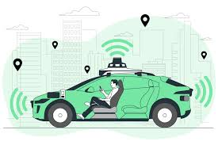
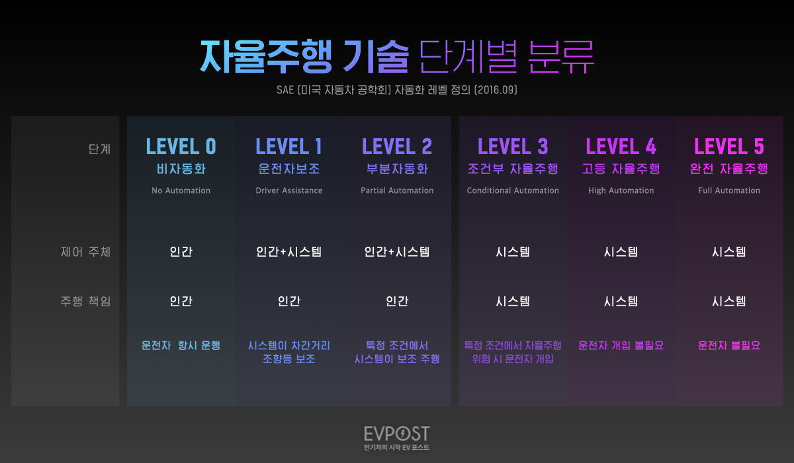
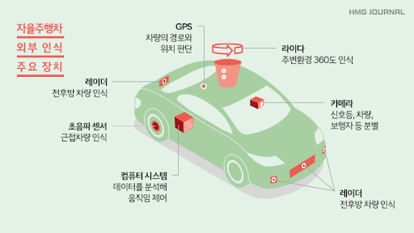

1. 자율주행 자동차에 대해

운전자의 개입 없이 주변 환경을 인식하고 주행 상황을 판단하여
스스로 목적지까지 운행하는 자동차
인지(sense), 판단(think), 제어(act) 등의 3가지 핵심요소로 구성되며,
하드웨어, 소프트웨어, 네트워크, 플랫폼 등 다양한 요소기술이 활용된다.
2. 자율 주행 레벨

- Level 0: 운전자의 보조기능 X, 운전자가 직접 모든 운전 조작을 수행한다.
- Level 1: 조향 또는 가속/감속 중 한 가지 기능만 시스템이 보조하는 단계
- Level 2: 조향 또는 가속/감속 기능을 모두 시스템이 보조
- Level 3: 특정 조건(예: 고속도로 주행 등) 하에 인공지능이 운전의 주도권을 가짐
그러나 시스템의 요구에 따라 운전자가 개입할 준비를 해야함. - Level 4: 특정 조건 내에서 완전한 자율주행을 제공
- Level 5: 모든 조건에서 시스템이 주행, 운전 개념 불필요.
3. 자율주행자동차 센서

- 카메라: 시각 정보, 차선, 표지판, 보행자 등을 인식한다.
- 라이다: 레이저를 이용해 3D 공간 정보 정밀 측정한다.
- 레이더: 전파를 이용해 물체 거리 및 속도 측정한다.
-
인지 센서들이 수집한 정보를 바탕으로 자율주행 시스템은 현재 상황을 판단하고,
주행 경로를 계획하며,장애물을 예측하여 회피하는 등의 결정을 내린다. -
이 과정에는 인공지능 기술이 다양하게 활용되어,복잡한 도로 환경에서도
안전하고 효과적인 운전을 진행할 수 있도록 가능하게함 - 조향 제어: 차량의 진행 방향을 조정
- 가속/감속 제어: 운전 진행 구역 별 속도를 조절
- 차량 동역학 기반 제어: 비정상적인 주행 조건에서 차량의 안정성을 유지하는 차량 자세 제어 장치
1. 인지
2. 판단
3. 제어
- 계획된 경로와 행동에 따라 차량의 조향, 가속, 제동을 정밀하게 제어.